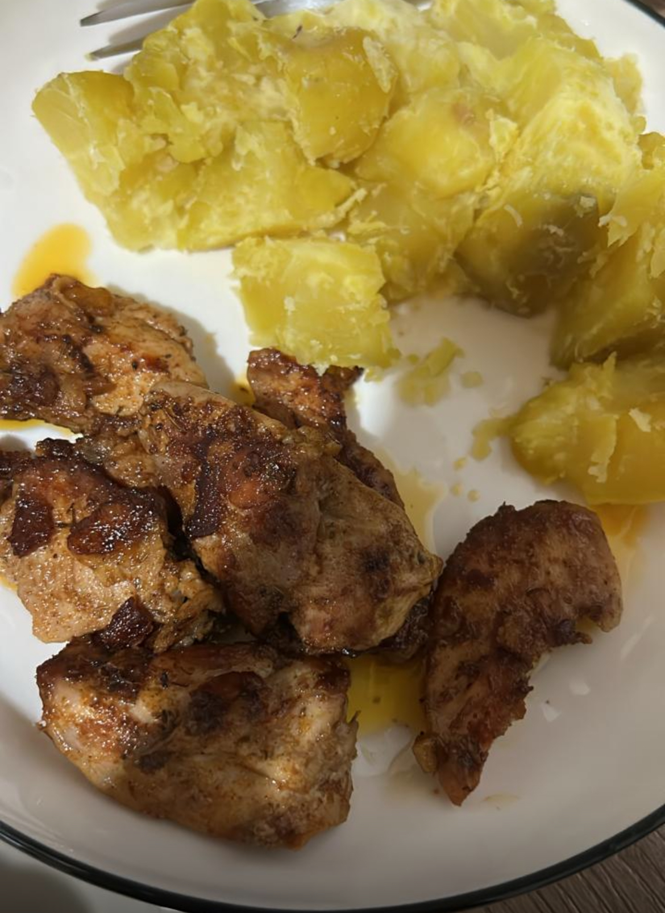

Not your basic Chicken
HomeI don't know how to call this recipe but I know this ain't going to be a basic one.

I have forgotten how to make a good adobo since I started making this recipe more often.
Ingredients
You will need the following:
- 200 g chicken
- 2 tbsp olive oil
- 1 tbsp minced garlic
- 1 tbsp paprika
- 1 tsp salt
- 1 tsp ground pepper
- a lot of thyme (and time,jk it does not)
- 1/2 cup of water
Steps
Here's what you will do:
- Combine all ingredients and marinate for 30 minutes.
- Place the marinated chicken in a pan,and add water.
- Cook until water is reduced.
- Adjust taste to your preference.
- Enjoy, with rice or sweet potatoes!!  Home